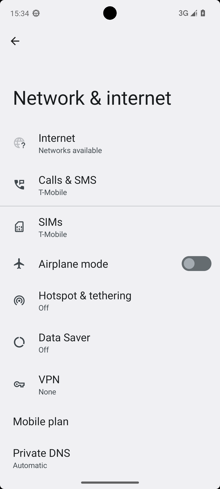
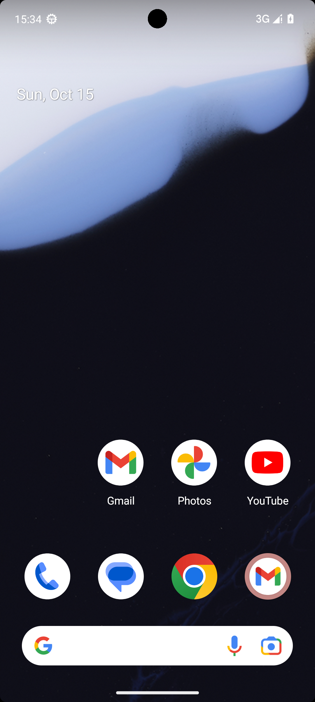
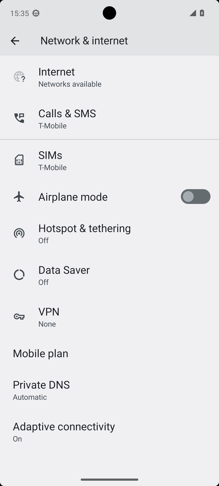
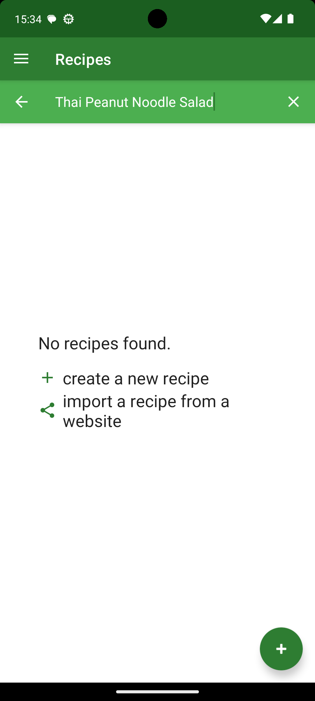

HyperFrames Android AI research trailer
Can a small VLM learn to control Android apps?
Small model. Real phone screens. One question: can it choose the next action?
The control loop
Screen + UI tree + goal becomes an action.
Screenshot
UI tree
Goal
VLM policy
click(index)
{"goal":"delete one recipe",
"state":"visible Android UI",
"action":"click",
"index":3}
Not image captioning
This is grounded interaction: the output has to execute on a live Android app.
The model does not just describe the screen. It must pick a valid action that changes the phone.
Baseline pain
Raw coordinates made grounding brittle.
Zero-shot struggle
Weak taps, invalid outputs, repeated scrolls, and loop-like behavior showed up in live AndroidWorld traces.
{"action":"tap","x":0.293,"y":0.934}
// near is not the same as correct

baseline trace
scroll(down) -> scroll(down) -> scroll(down)
Coordinate strings looked universal, but the training signal did not understand "near the right button."
Training pivot
Stop guessing pixels. Choose UI element IDs.
[3] Button "Delete"
[8] TextField "Recipe name"
[11] Button "Confirm"
{"action_type":"click",
"action_args":{"index":3}}
Accessibility-native grounding
The model selects from the menu Android already exposes, then the harness executes the selected element.
The key reframing: mobile control as structured selection over UI nodes, not raw coordinate regression.
Data + compute snapshot
Compact training. Real lift.
73K
train rows
AndroidControl step-level examples.
8,217
test rows
Held-out element accuracy.
4 E2B
Gemma + QLoRA
Single RTX 4090 training loop.
0.58%
trainable params
Adapter tuning, not full fine-tune.
A small VLM was enough to test the representation, schema, and history choices quickly.
Metric reveal
Zero-shot to Run L: +13.76 points.
+35% relative
Element accuracy rose from 39.35% to 53.11%.
Metric matched execution
Correct only when the selected element ID matched the target.
The headline is not a pretty loss curve. It is more correct UI element choices on held-out screens.
Ablation chain
I, J, K, L: the signal got cleaner.
Class weighting dipped. CAP schema and one-step history pushed the best result to 53.1%.
Real AndroidWorld traces
Extracted from result pickles, not mockups.
baseline / loop-like
SystemWifiTurnOn smoke trace

step 0: scroll(down)

step 9: scroll(down)
scroll down
scroll down
scroll down
scroll down
trained r62 / smoke
RecipeDeleteSingleRecipe trace

status: complete
open_app Broccoli
click index=3
type recipe name
status complete
Different tasks, honestly labeled: baseline shows repeated weak action; trained smoke trace reaches a complete status.
AndroidWorld reality check
Live multi-step agency is harder.
8.70%
best r62 AW-116 episode success, lifted from a hard-zero floor.
Why the drop?
Errors compound across long trajectories. The model must recover, decide when to stop, and survive live emulator distribution shift.
AndroidControl step accuracy improved. AndroidWorld showed the next frontier: full trajectories.
Final takeaway
Element-native grounding works.
Multi-step agency needs trajectory training.
A better action representation unlocked the per-step win. The next leap is training for whole episodes.